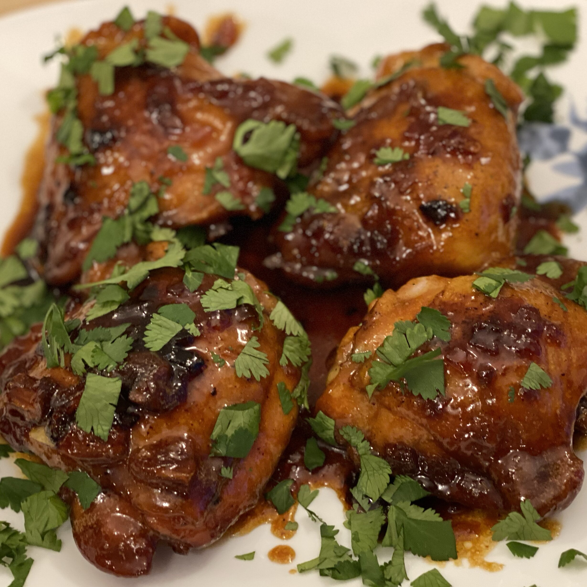

Recipe for Honey-Garlic Chicken Thighs

It's garlic-sweet and the cilantro tops it off.
Recipe
8 (5 ounce) boneless chicken thighs
salt and ground black pepper to taste
2 tablespoons olive oil, or as needed
0.5 medium onion, finely chopped
7 cloves garlic, chopped, or to taste
1 cup honey
0.5 cup soy sauce
1 pinch onion powder, or to taste
1 pinch garlic powder, or to taste
0.25 cup chopped fresh cilantro
- Season the chicken on both sides with salt and pepper.
- Cover the bottom of a cast iron skillet with olive oil and bring to medium-high heat. Add chicken and brown on one side, 3 to 5 minutes. Flip chicken, and add onion and garlic; continue to cook until chicken is mostly (but not fully) cooked and onion and garlic are soft, 5 to 7 minutes more. Remove chicken to a plate.
- Add honey, soy sauce, onion powder, garlic powder, and onion powder to the skillet. Stir and scrape the bottom of the pan with a wooden spoon to get the garlic and onion to mix with the liquid.
- Put chicken back into the pan, cover, and reduce heat to medium. Cook until no longer pink in the center and juices run clear, about 10 more minutes, turning once halfway through. An instant-read thermometer inserted into the center of a thigh should read at least 165 degrees F (74 degrees C).
- Place on a serving tray and drizzle liquid from the pan on top. Sprinkle with chopped cilantro before serving.